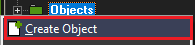

In this workshop, you'll be learning the basics of creating a top-down game using Gamemaker 1.4. This workshop is meant to provide a flexible template that you can build your own game off of.
Understanding Gamemaker
Creating a Project
First, create a game maker project. If you are unsure on how to create a project or how to set up the initial settings, please read the full guide workshop.
Full Guide on Starting a Project
Player Controls
Object Setup
Next, let's get your player character set up. To do this, we need to create an object.
Objects can be created by right-clicking the objects folder and selecting Create Object. Lets name our player obj_player so not to forget.
Next create a sprite by right clicking on the sprites folder and select Create Sprite, for now we'll use a place holder, you can later create a more detailed character. Rename your sprite to spr_player.
Click the Edit Button, then create a new sprite image.
Depending on the resolution of your game sprite sizes vary, if you are unsure use 16 by 16.
Double click on the square created and fill it with a random color. Thats your player for now.
Remember to center the sprite afterwards with the center button.
Set your objects sprite to the newly created sprite by clicking no sprite and selecting spr_player on the object menu.
Your player object should have a Create Event and a step event. In the create event drag a code block from the controls tab and place it into the Action Box, repeat this for the step event.
Your player object should look something like this:
- Has a sprite
- Has a create event
- Has a step event
- Has Code blocks for both the step and create event
Scripts
Before typing out our Step Event lets create a script to make our coding easier.
If you're using Gamemaker Studio 2 you could skip over this script.
Create a script by right clicking the scripts folder just like creating objects and sprites. Name our script approach.
///approach(number one, number two, shift);
//What this script does:
//It tells your game as two numbers are closing in on each others.
if (argument0 < argument1){
return min(argument0 + argument2, argument1);
}
else{
return max(argument0 - argument2, argument1);
}
Create Event
The Create Event is the first thing that runs from your object. Here we should establish the players initial set of variables things such as player health, players speed, etc.
For now lets establish the players movement variables that we'll use later in the step event. By modifying these variables the players speed will change accordingly.
Tip: Comments (code that don't run) are labled beginning with //
// Movement speed================================================= //
vx = 0; //change in x direction
vy = 0;//change in y direction
tspd = 0.8; //players overall speed
vxMax = 6.5 * tspd; //change in x direction max
vyMax = 6.5 * tspd; //change in y direction max
accel = 1 * tspd; // how fast player accelerates
fric = 2 * tspd; //player decelerating from momentum
// =============================================================== //
Step Event
Finally code that will move our character. Navigate back to the player and open its step event.
The step event is code that repeats every frame of the game. Here contains keyboard checks and collision checks between our character and its enviroment.
Don't be intimidated by the code, many of it is repeated and are essentially the same. The code is commented, but if you still are having trouble please ask for help.
//Temp Variables=========================================
var k_left, k_right, k_up, k_down //'var variable name' declares a temporary variable
// Keyboard Input=========================================
k_left = keyboard_check(ord('A')); //Here we assign keyboard inputs to the variables we just declared
k_right = keyboard_check(ord('D'));
k_up = keyboard_check(ord('W'));
k_down = keyboard_check(ord('S'));
//Left=========================================
if (k_left && !k_right){ //The next series of code checks if a certian key is pressed
if (vx > 0) // if the key is pressed it checks for the speed, if above 0
vx = approach(vx, 0, fric); // it checks to see a max speed is reached.
vx = approach(vx, -vxMax, accel);
}
//Right=========================================
if (k_right && !k_left) {
if (vx < 0)
vx = approach(vx, 0, fric);
vx = approach(vx, vxMax, accel);
}
//Up=========================================
if (k_up && !k_down) {
if (vy > 0)
vy = approach(vy, 0, fric);
vy = approach(vy, -vyMax, accel);
}
//Down=========================================
if (k_down && !k_up) {
if (vy < 0)
vy = approach(vy, 0, fric);
vy = approach(vy, vyMax, accel);
}
//Friction=====================================
if (!k_right && !k_left)
vx = approach(vx, 0, fric);
if (!k_down && !k_up)
vy = approach(vy, 0, fric);
var i; //for loop temp variable.
//Collisions
// Vertical
for (i = 0; i < abs(vy); ++i) { //This loop checks when our character touches a solid object.
if (place_meeting(x, y + sign(vy), obj_solid) && !place_meeting(x - 1, y + sign(vy), obj_solid))
--x;
if (place_meeting(x, y + sign(vy), obj_solid) && !place_meeting(x + 1, y + sign(vy), obj_solid))
++x;
if (!place_meeting(x, y + sign(vy), obj_solid))
y += sign(vy);
else {
vy = 0; //forcing it to stop before going through it.
break;
}
}
// Horizontal
for (i = 0; i < abs(vx); ++i) { //This is repeated for the horizontal direction.
if (place_meeting(x + sign(vx), y, obj_solid) && !place_meeting(x + sign(vx), y - 1, obj_solid))
--y;
if (place_meeting(x + sign(vx), y, obj_solid) && !place_meeting(x + sign(vx), y + 1, obj_solid))
++y;
if (!place_meeting(x + sign(vx), y, obj_solid))
x += sign(vx);
else {
vx = 0;
break;
}
}
//benifit of checking BOTH direction gives us the option to enable slopped walls. Spicy.
///////////////////////////////////////////////////////////////////////////////
Final Touches
Setting Up Your Level
In Gamemaker, your level assets are called rooms. Make a room by right clicking on the room folder and selecting create room.
You should be greeted by a window that looks like this.

The first step you want to take is to change the speed. Default room speed is at 30, but we're going to change it to 60, which
means our game is running at 60 frames per second. The game speed is located here.

Now we can start adding objects into our room. Go to the object tab at the top.

 Select the player by clicking on the blank box and selecting
Select the player by clicking on the blank box and selecting obj_player. Click anywhere in the room to place a single player object down. Repeat this but with the
wall object. To add objects down quickly, press shift and ctrl at the same time, click, and drag. Other shortcuts are shown on the right.
Design your level, and once you're ready, we can test it!

 Now that the level is designed, click the green checkmark to save your work, and hit the green play arrow on the top bar to run your game.
Now that the level is designed, click the green checkmark to save your work, and hit the green play arrow on the top bar to run your game.

Annnnd you're done! You've made it to the end of the tutorial, and you should have a working top-down game now! This is a great starting point for many games,
and from here the next step is usually combat, puzzles, switching levels, or view cameras. It's all open to your creativity now. See George if you want to continue
working on your project, and he can help you. Enjoy!
Extra Resources
Here are some other YouTube channels and Websites to help you on your game development journey!
Shaun Spalding (Youtube)
Heartbeast (Youtube)
PixelatedPope (Youtube)
RealTutsGML (Youtube)
r/Gamemaker (Reddit)
Official Gamemaker Help Page (YoyoGames)
Official Gamemaker Manual (YoyoGames)
And of course, Google is your best friend! There's plenty of help you can get by just searching your question up online.
So go forth, explorers, pioneers, and innovators.
Engineer your own games and express your creativity. The adventure has only begun!